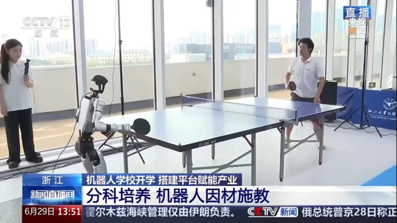

Whole-Body Control for Humanoid Table Tennis
Project lead and core developer
Led architecture, policy training, and real-robot deployment, building a closed loop from incoming-ball perception to whole-body striking control. The longest continuous rally reached 200+ returns.
Whole-body control · Reinforcement learning · Sim-to-real
Demonstration
System Architecture
Ball prediction and motion control are decoupled through striking commands: the upper layer specifies contact time, position, and desired racket velocity; the lower-level policy combines these commands with proprioception to move and swing.
Policy training
- Reference motions
and retargeting - Command sampling
and simulation - Task rewards + AMP
PPO policy updates - Whole-body
control policy
Real-robot deployment
- Optical motion capture
and state estimation - Trajectory prediction
and striking commands - Proprioception + command
Policy inference - 29-DoF actions
Whole-body control
Motion Control
A unified whole-body policy handles forehand, backhand, and standby commands, moves to the striking position, swings at the specified time and velocity, and returns to a ready stance.
Humanlike Motion and Multi-Discriminator AMP
Forehand and backhand references are retargeted to the robot, with separate AMP discriminators learning each style. Task-dependent activation of style rewards reduces interference between motion priors.
Reward Design and Policy Training
- Multi-anchor guidance: uses both feet and the pelvis to guide motion while balancing positioning and posture stability.
- Sparse striking rewards: combines the strike axis, timing windows, and adaptive reward scales to meet racket position, velocity, and orientation targets.
- Sim-to-real: randomizes friction, mass, center of mass, and actuator gains, with external disturbances and termination conditions.
Observations, Actions, and Commands
The actor uses deployable observations such as angular velocity, projected gravity, joint states, previous actions, and striking commands. The critic additionally receives privileged racket position, velocity, and orientation errors during training.
The policy produces 29-DoF actions for G1. Alternating strike and standby commands, with forehand/backhand target-position offsets, connect striking, locomotion, and recovery.
Trajectory Prediction
Estimates ball motion from tracked positions, predicts trajectories with identified flight and collision models, and converts reachable contact points into whole-body control commands.
Ball State Estimation
Caches timestamped 3D positions and fits each coordinate with least squares to estimate position and velocity. The cache is reset after a table bounce to avoid fitting across velocity discontinuities.
Flight Dynamics and Trajectory Integration
Models gravity and velocity-dependent drag during flight, and separate horizontal and vertical velocity restitution at table contact. Forward Euler integration advances position and velocity, switching to the collision model at each bounce.
Model Parameter Identification
Estimates drag from measured velocities and accelerations, and identifies horizontal and vertical restitution from pre- and post-bounce velocities to match the ball and contact conditions.
Striking Command Generation
When the predicted ball enters the reachable striking region, the system selects contact time and position. A desired landing point and flight time determine outgoing velocity; a simplified collision relation yields the desired racket velocity for the whole-body policy.
Predicted and Measured Trajectories
Uses the previous 15 observations to predict future motion and compares predictions with measured trajectories, evaluating the integrated estimation, identification, and prediction pipeline.
Dynamics and Parameter Identification
Ball position and velocity evolve according to:
ṗ = v，v̇ = g − k ‖v‖ v
Here k is the drag coefficient and g is gravitational acceleration. The relation between ‖a − g‖ and ‖v‖² is used to estimate k.
Table impacts use a velocity restitution model:
v+ = diag(Ch, Ch, −Cv) v−
Ch and Cv are identified from horizontal and vertical velocities across a bounce; v− and v+ denote pre- and post-impact velocities. Parameters depend on the ball and contact conditions.
Return-command generation uses simplifying assumptions: the desired outgoing trajectory includes gravity only, and the basic racket-impact calculation neglects tangential friction.
Motion Capture and Real-Time Deployment
Receives robot poses and ball positions, updates state, and passes commands to provide real-time inputs for trajectory prediction and control.
- Data processing: combines robot poses, environment markers, and motion history to filter irrelevant or anomalous observations.
- Process separation: motion-capture reception, prediction and command generation, and logging and visualization run in separate processes.
- Control integration: shared memory exchanges state and commands, allowing the control loop to consume the latest striking target with less blocking from perception.
Motion-Capture Localization Validation
Motion Skills
Forehand/backhand switching, stepping strikes, and repeated fast attacks demonstrate coordination between striking motions and locomotion.
Long-Rally Stability
Continuous rallies and hit counting demonstrate sustained operation of perception, prediction, and whole-body control. The longest continuous rally reached 200+ returns.
Public Demonstrations and Media
International Exhibition at AI & Digital Bridge 2026
The robot made its first public overseas appearance at AI & Digital Bridge 2026 in Kazakhstan, October 1–3, 2026. President Kassym-Jomart Tokayev and Prime Minister Olzhas Bektenov separately watched its table-tennis demonstration.
CCTV News Coverage
The robot appeared on CCTV-13's live news program, demonstrating humanoid–human table-tennis rallies.
